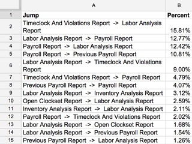
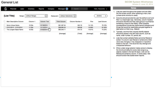
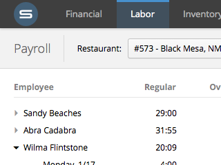
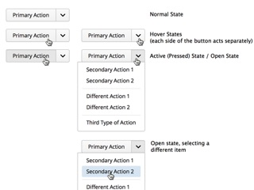
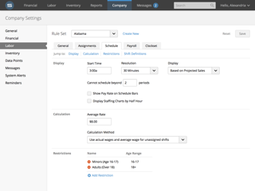
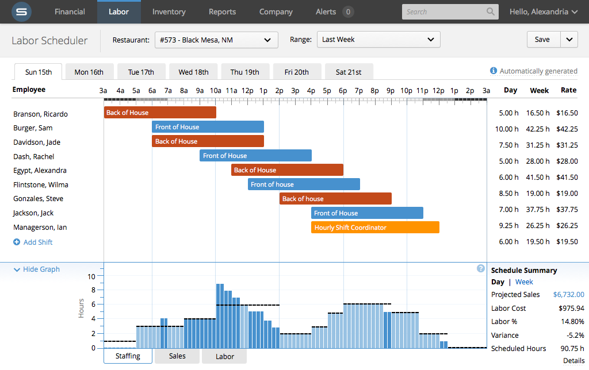

A massive undertaking for a sprawling system...
In use at over 7,000 restaurants worldwide, the Restaurant Management System was an unqualified success.
However, as it had grown in popularity, it had also grown in features, slowly evolving into sprawling mess of interconnected pages.
Redesigning such a system from the ground up would be no easy task, so we decided
to team up with an external team of usability professionals with experience in the industry.
Research and Data Analysis
Before design of the new system could begin, we undertook a project to understand the
existing system in detail. Starting with an expert review of the existing system and continuing into interviews
with both users and stakeholders, our team produced several documents.
For the this phase of the project, my primary contribution was using
R
to analyze 3 months worth of system access logs.
 Breaking down page access by user role allowed us to better determine accurate scenarios for
different types of users.
Breaking down page access by user role allowed us to better determine accurate scenarios for
different types of users.

Examining the frequency of “jumps” between pages helped to determine several user flows.
Information Architecture and Flows
Following the research phase, we created an exhaustive list of each conceptual “object”
present in the system, as well as the different actions that users would often perform using these.
From this we derived a comprehensive list of potential user workflows.
 An illustration showing the conceptual “objects” identified, and their relationships with one another.
An illustration showing the conceptual “objects” identified, and their relationships with one another.
 An example flow showing the creation of a labor schedule by a general manager, the typical
user who would perform this action.
An example flow showing the creation of a labor schedule by a general manager, the typical
user who would perform this action.
Wireframing
Using the flows as a basis, we were able to build wireframes depicting concepts
for a real system.

General patterns, such as the one shown here, allowed us to ensure consistency across the system.
 This wireframe showing the labor scheduler was informed by the flows depicted previously.
This wireframe showing the labor scheduler was informed by the flows depicted previously.
Definining the Visual Appearance
With the wireframes complete, we began work on defining a new visual language with which to bring
the wireframes to life (one of my key contributions to the project).
This visual language was intended not only for the redesigned restaurant management system,
but also for the company's entire range of products. Our key goals were to create a style
that was modern, consistent, and subdued.

Modern. The new visuals should draw inspiration from modern web applications, mobile device
user interfaces, and the like.

Consistent. Pages should adhere as closely as possible established patterns.
Particular controls should always look and act in line with expectations.

Subdued. The viewer's focus should be on the content, not on ornamentation. Minimal use of color and heavy use of
whitespace focuses attention toward what's important.
Full-Color Mockups
The last step of the process was to apply this visual language to several wireframes, demonstrating how
it could be applied to the system in a clean, consistent way.
Below is a full-resolution example of one of these mockups, showing the final labor scheduler design.

Conclusions and Future Work
In the end, our team had delivered hundreds of pages of wireframes depicting a redesigned
system. Aspects of the redesign are slowly filtering their way into the current version of the restaurant
management product and other products; the labor scheduler as pictured above was implemented in full.
Farther in the future, the full system as envisioned will be implemented.